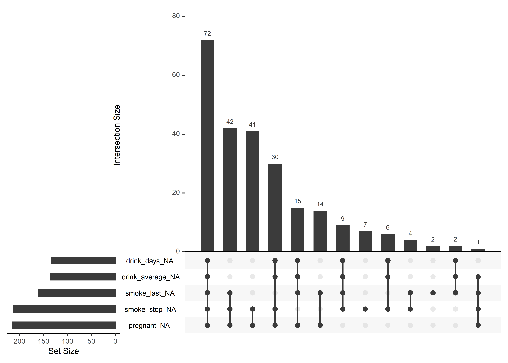

Chapter 3 Data 전처리-결측치 처리
데이터 전처리는 크게 (1) 결측치 처리와 (2) 이상값 처리 로 나눌 수 있습니다.
이번 chapter에서는 결측치를 파악하고, 처리 하는 법을 공유 드리겠습니다.이번에는 R에 기본 내장되어 있는 naniar 패키지의 riskfactors 데이터를 활용하겠습니다.
먼저, 필요한 라이브러리를 호출합니다.
이제 오늘 활용할 riskfactors 데이터를 파악해 보겠습니다.
str함수를 통해 riskfactors 데이터가 어떤 자료형과 어떤 구조로 되어 있는지 확인하실 수 있습니다.
## tibble [245 × 34] (S3: tbl_df/tbl/data.frame)
## $ state : Factor w/ 52 levels "1","2","5","6",..: 22 36 52 38 28 15 40 50 14 5 ...
## $ sex : Factor w/ 2 levels "Male","Female": 2 2 2 1 2 1 1 2 1 2 ...
## $ age : int [1:245] 49 48 55 42 66 66 37 62 38 42 ...
## $ weight_lbs : int [1:245] 190 170 163 230 135 165 150 170 146 260 ...
## $ height_inch : int [1:245] 64 68 64 74 62 70 68 70 70 73 ...
## $ bmi : num [1:245] 32.7 25.9 28 29.6 24.7 ...
## $ marital : Factor w/ 6 levels "Married","Divorced",..: 1 2 1 1 3 1 1 5 1 4 ...
## $ pregnant : Factor w/ 2 levels "Yes","No": NA NA NA NA NA NA NA NA NA 2 ...
## $ children : int [1:245] 0 0 0 1 0 0 3 0 2 3 ...
## $ education : Factor w/ 6 levels "1","2","3","4",..: 6 5 4 6 5 5 6 6 4 5 ...
## $ employment : Factor w/ 7 levels "1","2","3","4",..: 2 1 5 1 1 6 2 6 1 3 ...
## $ income : Factor w/ 10 levels "<10k","10-15k",..: 6 6 1 8 7 6 8 1 7 3 ...
## $ veteran : Factor w/ 5 levels "1","2","3","4",..: 5 5 5 5 5 3 5 5 5 5 ...
## $ hispanic : Factor w/ 2 levels "Yes","No": 2 2 1 2 2 2 2 2 2 2 ...
## $ health_general : Factor w/ 6 levels "Excellent","VeryGood",..: 3 4 4 1 1 1 2 5 5 3 ...
## $ health_physical : int [1:245] 3 4 0 0 0 0 0 30 30 0 ...
## $ health_mental : int [1:245] 15 30 0 0 0 0 0 30 30 20 ...
## $ health_poor : int [1:245] 2 3 NA NA NA NA NA 30 14 4 ...
## $ health_cover : Factor w/ 2 levels "Yes","No": 1 1 1 1 1 1 1 2 1 1 ...
## $ provide_care : Factor w/ 2 levels "Yes","No": 2 2 2 2 2 2 1 2 2 2 ...
## $ activity_limited: Factor w/ 2 levels "Yes","No": 1 2 2 2 2 2 2 2 1 NA ...
## $ drink_any : Factor w/ 2 levels "Yes","No": 2 2 2 1 2 2 1 2 2 NA ...
## $ drink_days : int [1:245] NA NA NA 15 NA NA 2 NA NA NA ...
## $ drink_average : int [1:245] NA NA NA NA NA NA 2 NA NA NA ...
## $ smoke_100 : Factor w/ 2 levels "Yes","No": 2 2 2 2 1 2 2 1 1 1 ...
## $ smoke_days : Factor w/ 3 levels "Everyday","Somedays",..: NA NA NA NA 1 NA NA 3 1 3 ...
## $ smoke_stop : Factor w/ 2 levels "Yes","No": NA NA NA NA 1 NA NA NA 1 NA ...
## $ smoke_last : Factor w/ 6 levels "3","4","5","6",..: NA NA NA NA NA NA NA 5 NA 3 ...
## $ diet_fruit : int [1:245] 1095 52 36 NA -7 24 52 156 24 NA ...
## $ diet_salad : int [1:245] 261 209 156 NA 261 52 156 24 84 NA ...
## $ diet_potato : int [1:245] 104 52 52 NA 209 104 24 52 144 NA ...
## $ diet_carrot : int [1:245] 156 0 24 NA 261 52 24 104 24 NA ...
## $ diet_vegetable : int [1:245] 521 52 24 NA 365 365 730 365 0 NA ...
## $ diet_juice : int [1:245] 12 0 24 NA 104 365 104 0 0 NA ...- riskfactors 데이터는 34개의 변수(열)와 245개의 관측치(행)로 구성되어 있으며,
tibble 데이터 구조를 갖고 있음을 알 수 있습니다.
3.1 결측치 요약 및 시각화 naniar 패키지
naniar 패키지를 활용하시면 결측치를 쉽고 빠르게 파악하실 수 있습니다.
우선 miss_case_summary 함수를 활용하시면 행 기준으로 결측치가 몇 개 있는지
결측치가 그 행의 전체 데이터 중 몇 퍼센트를 차지하는지 알려줍니다.miss_var_summary 함수는 열 기준으로 알려줍니다.
## # A tibble: 245 x 3
## case n_miss pct_miss
## <int> <int> <dbl>
## 1 91 15 44.1
## 2 133 15 44.1
## 3 4 12 35.3
## 4 49 12 35.3
## 5 185 12 35.3
## 6 10 11 32.4
## 7 231 10 29.4
## 8 14 9 26.5
## 9 61 8 23.5
## 10 80 8 23.5
## # ... with 235 more rows## # A tibble: 34 x 3
## variable n_miss pct_miss
## <chr> <int> <dbl>
## 1 pregnant 215 87.8
## 2 smoke_stop 212 86.5
## 3 smoke_last 161 65.7
## 4 drink_average 135 55.1
## 5 drink_days 134 54.7
## 6 smoke_days 128 52.2
## 7 health_poor 113 46.1
## 8 bmi 11 4.49
## 9 weight_lbs 10 4.08
## 10 diet_fruit 8 3.27
## # ... with 24 more rows- vis_miss 함수를 활용하여 간단하게 시각화하여 확인할 수도 있습니다.

gg_miss_upset 함수를 활용하시면, 어떤 패턴으로 결측치가 존재하는지 확인하실 수 있습니다.
아래의 예를 보시면, 5개 데이터가 모두 없는 경우가 72건으로 가장 많았고,
그 다음은 smoke_last, smoke_stop, pregnant 값이 없는 경우가 42건으로 많았습니다

3.2 결측치 대체하기
저희가 보유하고 있는 데이터는 그 수가 많기에, 결측치를 대체하지 않고,
제거한 후 사용하여도 원하는 분석결과를 얻으실 수도 있습니다.결측치를 대체하여 분석하기 원하신다면 아래의 포스팅 참고 부탁 드립니다.
mice, rpart, DMwR 등의 패키지를 활용하여 결측치를 대체하실 수 있습니다.
자세한 내용은 아래 링크 참조 부탁 드립니다.